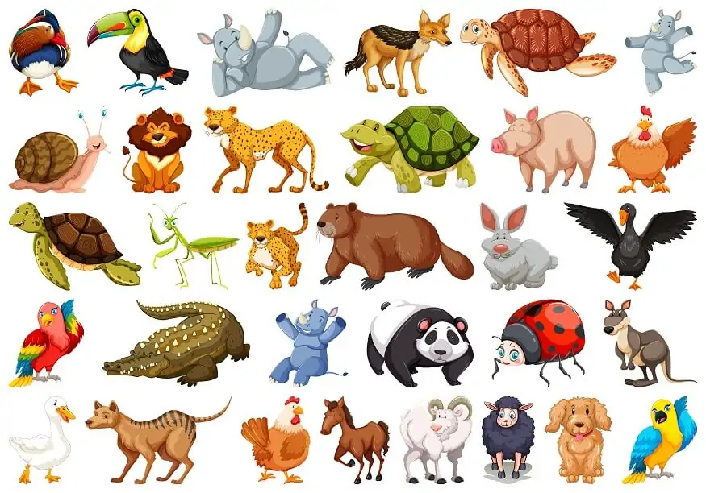

Animals
Animals are multicellular, eukaryotic organisms in the biological kingdom Animalia (/ˌænɪˈmeɪliə/[4]). With few exceptions, animals consume organic material, breathe oxygen, have myocytes and are able to move, can reproduce sexually, and grow from a hollow sphere of cells, the blastula, during embryonic development. Animals form a clade, meaning that they arose from a single common ancestor. Over 1.5 million living animal species have been described, of which around 1.05 million are insects, over 85,000 are molluscs, and around 65,000 are vertebrates. It has been estimated there are as many as 7.77 million animal species on Earth. Animal body lengths range from 8.5 μm (0.00033 in) to 33.6 m (110 ft). They have complex ecologies and interactions with each other and their environments, forming intricate food webs. The scientific study of animals is known as zoology, and the study of animal behaviour is known as ethology. The animal kingdom is divided into five infrakingdoms/superphyla, namely Porifera, Ctenophora, Placozoa, Cnidaria and Bilateria. Most living animal species belong to the infrakingdom Bilateria, a highly proliferative clade whose members have a bilaterally symmetric and significantly cephalised body plan, and the vast majority of bilaterians belong to two large superphyla: the protostomes, which includes organisms such as arthropods, molluscs, flatworms, annelids and nematodes; and the deuterostomes, which include echinoderms, hemichordates and chordates, the latter of which contains the vertebrates. The much smaller basal phylum Xenacoelomorpha have an uncertain position within Bilateria. Animals first appear in the fossil record in the late Cryogenian period and diversified in the subsequent Ediacaran period in what is known as the Avalon explosion. Earlier evidence of animals is still controversial; the sponge-like organism Otavia has been dated back to the Tonian period at the start of the Neoproterozoic, but its identity as an animal is heavily contested.[5] Nearly all modern animal phyla became clearly established in the fossil record as marine species during the Cambrian explosion, which began around 539 million years ago (Mya), and most classes during the Ordovician radiation 485.4 Mya. 6,331 groups of genes common to all living animals have been identified; these may have arisen from a single common ancestor that lived about 650 Mya during the Cryogenian period. Historically, Aristotle divided animals into those with blood and those without. Carl Linnaeus created the first hierarchical biological classification for animals in 1758 with his Systema Naturae, which Jean-Baptiste Lamarck expanded into 14 phyla by 1809. In 1874, Ernst Haeckel divided the animal kingdom into the multicellular Metazoa (now synonymous with Animalia) and the Protozoa, single-celled organisms no longer considered animals. In modern times, the biological classification of animals relies on advanced techniques, such as molecular phylogenetics, which are effective at demonstrating the evolutionary relationships between taxa. Humans make use of many other animal species for food (including meat, eggs, and dairy products), for materials (such as leather, fur, and wool), as pets and as working animals for transportation, and services. Dogs, the first domesticated animal, have been used in hunting, in security and in warfare, as have horses, pigeons and birds of prey; while other terrestrial and aquatic animals are hunted for sports, trophies or profits. Non-human animals are also an important cultural element of human evolution, having appeared in cave arts and totems since the earliest times, and are frequently featured in mythology, religion, arts, literature, heraldry, politics, and sports.
Etymology
The word animal comes from the Latin noun animal of the same meaning, which is itself derived from Latin animalis 'having breath or soul'.[6] The biological definition includes all members of the kingdom Animalia.[7] In colloquial usage, the term animal is often used to refer only to nonhuman animals. The term metazoa is derived from Ancient Greek μετα meta 'after' (in biology, the prefix meta- stands for 'later') and ζῷᾰ zōia 'animals', plural of ζῷον zōion 'animal'.